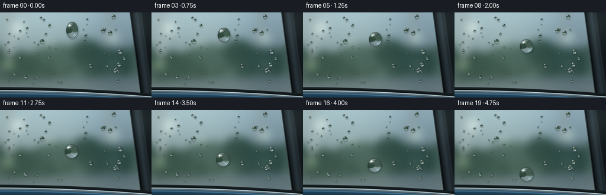
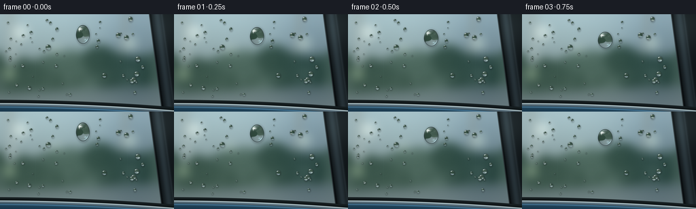

CODING AGENTS AS PIXEL WORLD MODELS
traex/GPT-6.1-Sol · mechanics_0050
点击播放 · 原生 RGB 像素
逐轮保存的候选
回放视频、检查图与代码变化。
每份候选均可单独播放。实际图片检查记录在下方工具轨迹中。
候选 01播放与检查图
点击播放 · 原生 RGB 像素


展开代码变化
--- 上一保存版本
+++ 本次保存版本
@@ -0,0 +1,179 @@
+"""Procedural RGB macro photograph animation of a bead on washed car glass."""
+from pathlib import Path
+import json
+import numpy as np
+from PIL import Image, ImageDraw, ImageFilter
+import artifact_io
+
+ROOT = Path(__file__).resolve().parent
+SPEC = json.loads((ROOT/'task_spec.json').read_text())
+W,H = SPEC['width'],SPEC['height']
+S = 4
+WW,HH = W*S,H*S
+rng = np.random.default_rng(73)
+Y,X = np.mgrid[0:HH,0:WW].astype(np.float32)
+X = (X+.5)/S
+Y = (Y+.5)/S
+
+def gaussian(x,y,cx,cy,sx,sy):
+ return np.exp(-.5*(((x-cx)/sx)**2+((y-cy)/sy)**2))
+
+def blend(a,b,m):
+ return a*(1-m[...,None])+np.asarray(b)*m[...,None]
+
+# The out-of-focus outdoor scene, seen through a slightly tinted side window.
+f=Y/H
+sky=np.stack([164-74*f,185-82*f,188-89*f],axis=-1)
+sky+=gaussian(X,Y,42,30,70,65)[...,None]*np.array([15,14,10])
+im=Image.fromarray(np.uint8(np.clip(sky,0,255)))
+d=ImageDraw.Draw(im,'RGB')
+def ellipse(box,col):
+ d.ellipse(tuple(int(v*S) for v in box),fill=col)
+def polygon(pts,col):
+ d.polygon([(int(x*S),int(y*S)) for x,y in pts],fill=col)
+# Distant pale wash bay architecture and patches of foliage.
+polygon([(0,70),(256,57),(256,118),(0,134)],(105,122,116))
+polygon([(5,0),(22,0),(30,121),(15,125)],(168,181,175))
+polygon([(182,0),(190,0),(176,114),(171,112)],(159,168,158))
+for i in range(80):
+ xx=rng.uniform(-35,275); yy=rng.uniform(63,137)
+ rx=rng.uniform(9,31); ry=rng.uniform(7,22)
+ c=np.array([63,85,68])+rng.uniform(-12,25)
+ ellipse((xx-rx,yy-ry,xx+rx,yy+ry),tuple(np.uint8(c)))
+polygon([(0,117),(256,105),(256,144),(0,144)],(111,126,122))
+polygon([(0,132),(256,123),(256,144),(0,144)],(122,135,132))
+for xx,yy,r,col in [(30,27,11,(218,228,218)),(192,43,9,(200,215,200)),(81,51,5,(189,204,186)),(14,88,8,(143,165,130))]:
+ ellipse((xx-r,yy-r,xx+r,yy+r),col)
+sharp=np.asarray(im.filter(ImageFilter.GaussianBlur(1.5*S))).astype(np.float32)
+background=np.asarray(im.filter(ImageFilter.GaussianBlur(7*S))).astype(np.float32)
+# Glass: cool coating, a broad daylight reflection, fine continuous surface grain.
+background=background*.90+np.array([7,13,17])
+reflection=gaussian(X,Y,53,8,138,45)
+background+=reflection[...,None]*np.array([8,12,15])
+background+=gaussian(X,Y,199,78,37,98)[...,None]*np.array([-18,-16,-10])
+noise=rng.normal(0,.50,(HH,WW,1)).astype(np.float32)
+background+=noise
+# Gentle existing vertical water-film streaks on freshly washed glass.
+for xx,yy,length in [(33,12,78),(75,8,35),(188,33,69),(205,6,82),(52,66,42)]:
+ center=xx+.35*np.sin(Y*.07+xx)
+ fade=np.clip((Y-yy)/6,0,1)*np.clip((yy+length-Y)/10,0,1)
+ thread=np.exp(-((X-center)/.21)**2)*fade
+ background+=thread[...,None]*np.array([2.3,3.1,3.4])
+
+# A diagonal gloss-black window pillar and an actual rubber/chrome/paint sill.
+pillarx=219+.132*Y
+p=X-pillarx
+pm=np.clip(p*S+.5,0,1)
+pcol=np.zeros((HH,WW,3),np.float32)+np.array([16,22,25])
+pcol+=np.exp(-((p-12)/6)**2)[...,None]*np.array([24,30,33])
+pcol+=np.exp(-((p-19)/1.4)**2)[...,None]*np.array([12,14,15])
+pcol+=gaussian(X,Y,240,15,25,28)[...,None]*np.array([17,20,20])
+pcol-=np.exp(-((p-2.5)/1.3)**2)[...,None]*np.array([8,10,11])
+pcol+=np.exp(-((p-.6)/.24)**2)[...,None]*np.array([69,76,76])
+background=blend(background,pcol,pm)
+sill=128.4+.034*(X-100)+.00015*(X-100)**2
+q=Y-sill
+# Rubber gasket sits above a fine polished aluminum lip.
+rubber=np.zeros_like(background)+np.array([18,25,27])
+rubber+=np.exp(-((q-1.2)/.44)**2)[...,None]*np.array([13,17,18])
+background=blend(background,rubber,np.clip(q*S+.5,0,1))
+chrome=np.zeros_like(background)+np.array([67,85,94])
+chrome+=np.exp(-((q-5.6)/.7)**2)[...,None]*np.array([143,146,140])
+chrome+=np.exp(-((q-7.5)/.9)**2)[...,None]*np.array([31,37,43])
+background=blend(background,chrome,np.clip((q-4.8)*S+.5,0,1))
+paint=np.zeros_like(background)+np.array([33,68,91])
+paint+=np.exp(-((q-10.7)/1.0)**2)[...,None]*np.array([40,53,61])
+paint-=np.clip((q-12)/16,0,.5)[...,None]*np.array([16,26,30])
+paint+=noise*1.2
+background=blend(background,paint,np.clip((q-9.3)*S+.5,0,1))
+
+# Lens sampling used by water beads. Reflection is brighter at glancing angles.
+def sample_env(xx,yy,tex=sharp):
+ px=np.clip(xx*S-.5,0,WW-1.001); py=np.clip(yy*S-.5,0,HH-1.001)
+ ix=px.astype(np.int32); iy=py.astype(np.int32)
+ fx=(px-ix)[...,None]; fy=(py-iy)[...,None]
+ return (tex[iy,ix]*(1-fx)+tex[iy,ix+1]*fx)*(1-fy)+(tex[iy+1,ix]*(1-fx)+tex[iy+1,ix+1]*fx)*fy
+
+def bead(canvas,cx,cy,rx,ry,seed=0,hero=False,tail=0):
+ # Work only in a tightly bounded patch. The raised cap projects as a near circle.
+ xa=max(0,int((cx-rx-3)*S)); xb=min(WW,int((cx+rx+3)*S)+1)
+ ya=max(0,int((cy-ry-4-tail)*S)); yb=min(HH,int((cy+ry+4)*S)+1)
+ xx=X[ya:yb,xa:xb]; yy=Y[ya:yb,xa:xb]
+ u=(xx-cx)/rx; v=(yy-cy)/ry
+ # Small shape asymmetry, without an artificial perfectly outlined circle.
+ u=u/(1+.018*np.sin(v*4+seed))
+ rr=np.sqrt(u*u+v*v)
+ coverage=np.clip((1-rr)*S*min(rx,ry)+.5,0,1)
+ z=np.sqrt(np.maximum(1-rr*rr,0))
+ patch=canvas[ya:yb,xa:xb]
+ shadow=np.exp(-((np.sqrt(((xx-cx-.55)/rx)**2+((yy-cy-.8)/ry)**2)-.98)/(.09+1/rx))**2)*.13
+ patch=patch*(1-shadow[...,None])
+ span=(23+35*z) if hero else (9+17*z)
+ refracted=sample_env(cx-u*span,68-v*(38+28*z))
+ # Transmission through the tiny convex lens, with a dark edge and an inverted view.
+ refracted=refracted*.84+np.array([4,10,12])
+ interior_shade=.81+.19*z
+ refracted*=interior_shade[...,None]
+ fresnel=.025+.64*(1-z)**3
+ env_ref=np.zeros_like(refracted)+np.array([66,90,98])
+ env_ref+=gaussian(u,v,-.25,-.61,.8,.25)[...,None]*np.array([119,126,123])
+ water=blend(refracted,env_ref,fresnel)
+ # Meniscus: a narrow, shaded rim with naturally broken sky reflection.
+ darkring=np.exp(-((rr-.963)/(.017+.12/rx))**2)
+ water*=1-(darkring*.36)[...,None]
+ angle=np.arctan2(v,u)
+ arc=np.exp(-((rr-.87)/(.03+.065/rx))**2)*np.exp(-((angle+2.20)/.49)**2)
+ water+=arc[...,None]*np.array([130,142,141])
+ caustic=np.exp(-((rr-.87)/.044)**2)*np.exp(-((angle-.86)/.53)**2)
+ water+=caustic[...,None]*np.array([71,91,99])
+ # A reflected white sky patch and its smaller secondary sparkle.
+ glint=gaussian(u,v,-.38,-.59,.17,.085)
+ glint2=gaussian(u,v,-.54,-.45,.065,.10)
+ water=blend(water,np.array([248,253,251]),np.clip(glint*.94+glint2*.7,0,1))
+ water+=gaussian(u,v,.37,.55,.13,.07)[...,None]*np.array([31,44,48])
+ canvas[ya:yb,xa:xb]=blend(patch,np.clip(water,0,255),coverage)
+
+# Random little wash-water beads: sparse enough for the main moving drop to read.
+static=[]
+for i in range(64):
+ x=rng.uniform(6,211); y=rng.uniform(5,122)
+ if abs(x-122)<19 and 15<y<123:
+ continue
+ r=rng.uniform(.60,2.3)
+ if i%11==0: r=rng.uniform(2.6,3.6)
+ static.append((x,y,r,r*rng.uniform(.95,1.21),float(rng.uniform(0,6))))
+# A few unmistakable nearby sharply focused beads.
+static += [(71,49,3.7,4.0,2.),(174,31,3.4,3.7,3.),(194,99,2.9,3.3,1.),(43,109,2.5,2.8,5.)]
+base=background.copy()
+for args in static:
+ bead(base,*args)
+
+frames=[]
+for i in range(SPEC['frames']):
+ t=i/(SPEC['frames']-1)
+ # It releases from an initially elongated pinned bead, rounding as it slides.
+ cy=30+79*(.20*t+.80*t**1.30)
+ cx=122+.75*np.sin(t*7)-.9*t
+ relaxation=np.exp(-t*8)
+ rx=10.8+.8*t-.8*relaxation
+ ry=11.4+.6*t+2.5*relaxation
+ frame=base.copy()
+ # The very thin wet footprint remains on the pane behind the descending drop.
+ start=25
+ end=cy-ry*.61
+ if end>start:
+ center=122+.75*np.sin(np.clip((Y-30)/79,0,1)*7)-.9*np.clip((Y-30)/79,0,1)
+ fade=np.clip((Y-start)/5,0,1)*np.clip((end-Y)/3,0,1)
+ wet=np.exp(-((X-center)/.72)**2)*fade*.21
+ frame=blend(frame,frame*.94+np.array([5,8,9]),wet)
+ edge=(np.exp(-((X-center-.8)/.19)**2)*1.5-np.exp(-((X-center+.65)/.25)**2)*1.8)*fade
+ frame+=edge[...,None]*np.array([1,1.2,1.3])
+ bead(frame,cx,cy,rx,ry,seed=.6,hero=True)
+ # Restrained photographic corner falloff. No camera cuts or scene changes.
+ vignette=1-.11*((X-W*.48)/(W*.75))**2-.055*((Y-H*.43)/(H*.85))**2
+ frame=np.clip(frame*vignette[...,None],0,255).astype(np.uint8)
+ final=Image.fromarray(frame).resize((W,H),Image.Resampling.LANCZOS)
+ frames.append(np.asarray(final))
+frames=np.stack(frames).astype(np.uint8)
+artifact_io.save(frames,ROOT)
+print(f'Saved {frames.shape[0]} RGB frames, {W}x{H}, {SPEC["fps"]} fps.')
可观测工具轨迹
实际执行的命令与返回图片。
命令 1exit 0
/bin/bash -lc "ls -la && cat prompt.txt && printf '\\n---RULES---\\n' && cat GENERATION_RULES.md && printf '\\n---SPEC---\\n' && cat task_spec.json"
命令 2exit 0
/bin/bash -lc "cat artifact_io.py && python - <<'PY'
import numpy,PIL
print('numpy',numpy.__version__,'PIL',PIL.__version__)
PY"命令 3exit 0
/bin/bash -lc "cat > generate.py <<'PY'
\"\"\"Procedural RGB macro photograph animation of a bead on washed car glass.\"\"\"
from pathlib import Path
import json
import numpy as np
from PIL import Image, ImageDraw, ImageFilter
import artifact_io
ROOT = Path(__file__).resolve().parent
SPEC = json.loads((ROOT/'task_spec.json').read_text())
W,H = SPEC['width'],SPEC['height']
S = 4
WW,HH = W*S,H*S
rng = np.random.default_rng(73)
Y,X = np.mgrid[0:HH,0:WW].astype(np.float32)
X = (X+.5)/S
Y = (Y+.5)/S
def gaussian(x,y,cx,cy,sx,sy):
return np.exp(-.5*(((x-cx)/sx)**2+((y-cy)/sy)**2))
def blend(a,b,m):
return a*(1-m[...,None])+np.asarray(b)*m[...,None]
# The out-of-focus outdoor scene, seen through a slightly tinted side window.
f=Y/H
sky=np.stack([164-74*f,185-82*f,188-89*f],axis=-1)
sky+=gaussian(X,Y,42,30,70,65)[...,None]*np.array([15,14,10])
im=Image.fromarray(np.uint8(np.clip(sky,0,255)))
d=ImageDraw.Draw(im,'RGB')
def ellipse(box,col):
d.ellipse(tuple(int(v*S) for v in box),fill=col)
def polygon(pts,col):
d.polygon([(int(x*S),int(y*S)) for x,y in pts],fill=col)
# Distant pale wash bay architecture and patches of foliage.
polygon([(0,70),(256,57),(256,118),(0,134)],(105,122,116))
polygon([(5,0),(22,0),(30,121),(15,125)],(168,181,175))
polygon([(182,0),(190,0),(176,114),(171,112)],(159,168,158))
for i in range(80):
xx=rng.uniform(-35,275); yy=rng.uniform(63,137)
rx=rng.uniform(9,31); ry=rng.uniform(7,22)
c=np.array([63,85,68])+rng.uniform(-12,25)
ellipse((xx-rx,yy-ry,xx+rx,yy+ry),tuple(np.uint8(c)))
polygon([(0,117),(256,105),(256,144),(0,144)],(111,126,122))
polygon([(0,132),(256,123),(256,144),(0,144)],(122,135,132))
for xx,yy,r,col in [(30,27,11,(218,228,218)),(192,43,9,(200,215,200)),(81,51,5,(189,204,186)),(14,88,8,(143,165,130))]:
ellipse((xx-r,yy-r,xx+r,yy+r),col)
sharp=np.asarray(im.filter(ImageFilter.GaussianBlur(1.5*S))).astype(np.float32)
background=np.asarray(im.filter(ImageFilter.GaussianBlur(7*S))).astype(np.float32)
# Glass: cool coating, a broad daylight reflection, fine continuous surface grain.
background=background*.90+np.array([7,13,17])
reflection=gaussian(X,Y,53,8,138,45)
background+=reflection[...,None]*np.array([8,12,15])
background+=gaussian(X,Y,199,78,37,98)[...,None]*np.array([-18,-16,-10])
noise=rng.normal(0,.50,(HH,WW,1)).astype(np.float32)
background+=noise
# Gentle existing vertical water-film streaks on freshly washed glass.
for xx,yy,length in [(33,12,78),(75,8,35),(188,33,69),(205,6,82),(52,66,42)]:
center=xx+.35*np.sin(Y*.07+xx)
fade=np.clip((Y-yy)/6,0,1)*np.clip((yy+length-Y)/10,0,1)
thread=np.exp(-((X-center)/.21)**2)*fade
background+=thread[...,None]*np.array([2.3,3.1,3.4])
# A diagonal gloss-black window pillar and an actual rubber/chrome/paint sill.
pillarx=219+.132*Y
p=X-pillarx
pm=np.clip(p*S+.5,0,1)
pcol=np.zeros((HH,WW,3),np.float32)+np.array([16,22,25])
pcol+=np.exp(-((p-12)/6)**2)[...,None]*np.array([24,30,33])
pcol+=np.exp(-((p-19)/1.4)**2)[...,None]*np.array([12,14,15])
pcol+=gaussian(X,Y,240,15,25,28)[...,None]*np.array([17,20,20])
pcol-=np.exp(-((p-2.5)/1.3)**2)[...,None]*np.array([8,10,11])
pcol+=np.exp(-((p-.6)/.24)**2)[...,None]*np.array([69,76,76])
background=blend(background,pcol,pm)
sill=128.4+.034*(X-100)+.00015*(X-100)**2
q=Y-sill
# Rubber gasket sits above a fine polished aluminum lip.
rubber=np.zeros_like(background)+np.array([18,25,27])
rubber+=np.exp(-((q-1.2)/.44)**2)[...,None]*np.array([13,17,18])
background=blend(background,rubber,np.clip(q*S+.5,0,1))
chrome=np.zeros_like(background)+np.array([67,85,94])
chrome+=np.exp(-((q-5.6)/.7)**2)[...,None]*np.array([143,146,140])
chrome+=np.exp(-((q-7.5)/.9)**2)[...,None]*np.array([31,37,43])
background=blend(background,chrome,np.clip((q-4.8)*S+.5,0,1))
paint=np.zeros_like(background)+np.array([33,68,91])
paint+=np.exp(-((q-10.7)/1.0)**2)[...,None]*np.array([40,53,61])
paint-=np.clip((q-12)/16,0,.5)[...,None]*np.array([16,26,30])
paint+=noise*1.2
background=blend(background,paint,np.clip((q-9.3)*S+.5,0,1))
# Lens sampling used by water beads. Reflection is brighter at glancing angles.
def sample_env(xx,yy,tex=sharp):
px=np.clip(xx*S-.5,0,WW-1.001); py=np.clip(yy*S-.5,0,HH-1.001)
ix=px.astype(np.int32); iy=py.astype(np.int32)
fx=(px-ix)[...,None]; fy=(py-iy)[...,None]
return (tex[iy,ix]*(1-fx)+tex[iy,ix+1]*fx)*(1-fy)+(tex[iy+1,ix]*(1-fx)+tex[iy+1,ix+1]*fx)*fy
def bead(canvas,cx,cy,rx,ry,seed=0,hero=False,tail=0):
# Work only in a tightly bounded patch. The raised cap projects as a near circle.
xa=max(0,int((cx-rx-3)*S)); xb=min(WW,int((cx+rx+3)*S)+1)
ya=max(0,int((cy-ry-4-tail)*S)); yb=min(HH,int((cy+ry+4)*S)+1)
xx=X[ya:yb,xa:xb]; yy=Y[ya:yb,xa:xb]
u=(xx-cx)/rx; v=(yy-cy)/ry
# Small shape asymmetry, without an artificial perfectly outlined circle.
u=u/(1+.018*np.sin(v*4+seed))
rr=np.sqrt(u*u+v*v)
coverage=np.clip((1-rr)*S*min(rx,ry)+.5,0,1)
z=np.sqrt(np.maximum(1-rr*rr,0))
patch=canvas[ya:yb,xa:xb]
shadow=np.exp(-((np.sqrt(((xx-cx-.55)/rx)**2+((yy-cy-.8)/ry)**2)-.98)/(.09+1/rx))**2)*.13
patch=patch*(1-shadow[...,None])
span=(23+35*z) if hero else (9+17*z)
refracted=sample_env(cx-u*span,68-v*(38+28*z))
# Transmission through the tiny convex lens, with a dark edge and an inverted view.
refracted=refracted*.84+np.array([4,10,12])
interior_shade=.81+.19*z
refracted*=interior_shade[...,None]
fresnel=.025+.64*(1-z)**3
env_ref=np.zeros_like(refracted)+np.array([66,90,98])
env_ref+=gaussian(u,v,-.25,-.61,.8,.25)[...,None]*np.array([119,126,123])
water=blend(refracted,env_ref,fresnel)
# Meniscus: a narrow, shaded rim with naturally broken sky reflection.
darkring=np.exp(-((rr-.963)/(.017+.12/rx))**2)
water*=1-(darkring*.36)[...,None]
angle=np.arctan2(v,u)
arc=np.exp(-((rr-.87)/(.03+.065/rx))**2)*np.exp(-((angle+2.20)/.49)**2)
water+=arc[...,None]*np.array([130,142,141])
caustic=np.exp(-((rr-.87)/.044)**2)*np.exp(-((angle-.86)/.53)**2)
water+=caustic[...,None]*np.array([71,91,99])
# A reflected white sky patch and its smaller secondary sparkle.
glint=gaussian(u,v,-.38,-.59,.17,.085)
glint2=gaussian(u,v,-.54,-.45,.065,.10)
water=blend(water,np.array([248,253,251]),np.clip(glint*.94+glint2*.7,0,1))
water+=gaussian(u,v,.37,.55,.13,.07)[...,None]*np.array([31,44,48])
canvas[ya:yb,xa:xb]=blend(patch,np.clip(water,0,255),coverage)
# Random little wash-water beads: sparse enough for the main moving drop to read.
static=[]
for i in range(64):
x=rng.uniform(6,211); y=rng.uniform(5,122)
if abs(x-122)<19 and 15<y<123:
continue
r=rng.uniform(.60,2.3)
if i%11==0: r=rng.uniform(2.6,3.6)
static.append((x,y,r,r*rng.uniform(.95,1.21),float(rng.uniform(0,6))))
# A few unmistakable nearby sharply focused beads.
static += [(71,49,3.7,4.0,2.),(174,31,3.4,3.7,3.),(194,99,2.9,3.3,1.),(43,109,2.5,2.8,5.)]
base=background.copy()
for args in static:
bead(base,*args)
frames=[]
for i in range(SPEC['frames']):
t=i/(SPEC['frames']-1)
# It releases from an initially elongated pinned bead, rounding as it slides.
cy=30+79*(.20*t+.80*t**1.30)
cx=122+.75*np.sin(t*7)-.9*t
relaxation=np.exp(-t*8)
rx=10.8+.8*t-.8*relaxation
ry=11.4+.6*t+2.5*relaxation
frame=base.copy()
# The very thin wet footprint remains on the pane behind the descending drop.
start=25
end=cy-ry*.61
if end>start:
center=122+.75*np.sin(np.clip((Y-30)/79,0,1)*7)-.9*np.clip((Y-30)/79,0,1)
fade=np.clip((Y-start)/5,0,1)*np.clip((end-Y)/3,0,1)
wet=np.exp(-((X-center)/.72)**2)*fade*.21
frame=blend(frame,frame*.94+np.array([5,8,9]),wet)
edge=(np.exp(-((X-center-.8)/.19)**2)*1.5-np.exp(-((X-center+.65)/.25)**2)*1.8)*fade
frame+=edge[...,None]*np.array([1,1.2,1.3])
bead(frame,cx,cy,rx,ry,seed=.6,hero=True)
# Restrained photographic corner falloff. No camera cuts or scene changes.
vignette=1-.11*((X-W*.48)/(W*.75))**2-.055*((Y-H*.43)/(H*.85))**2
frame=np.clip(frame*vignette[...,None],0,255).astype(np.uint8)
final=Image.fromarray(frame).resize((W,H),Image.Resampling.LANCZOS)
frames.append(np.asarray(final))
frames=np.stack(frames).astype(np.uint8)
artifact_io.save(frames,ROOT)
print(f'Saved {frames.shape[0]} RGB frames, {W}x{H}, {SPEC[\"fps\"]} fps.')
PY
python generate.py
ls -lh pixels.npz index.html inspection.png frames/00.png frames/19.png"保存候选 1 份；完成命令 3 次；可验证图片返回 0 张。原始 API 响应与完整日志保留在本地。